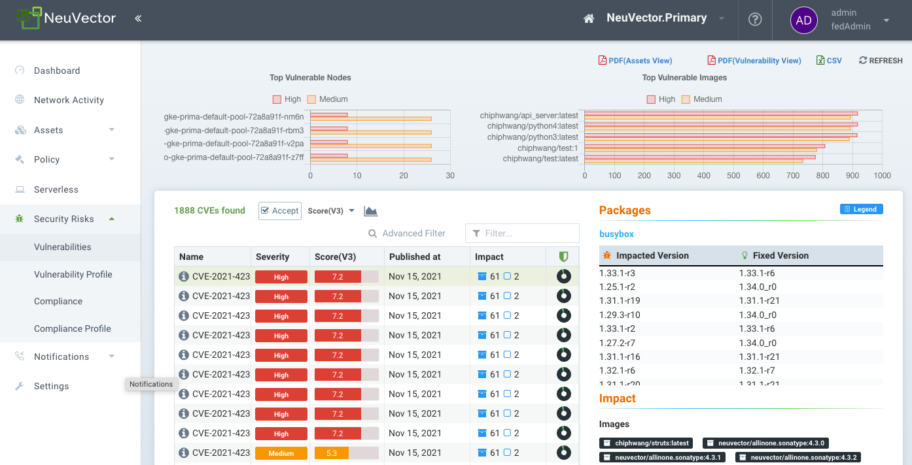
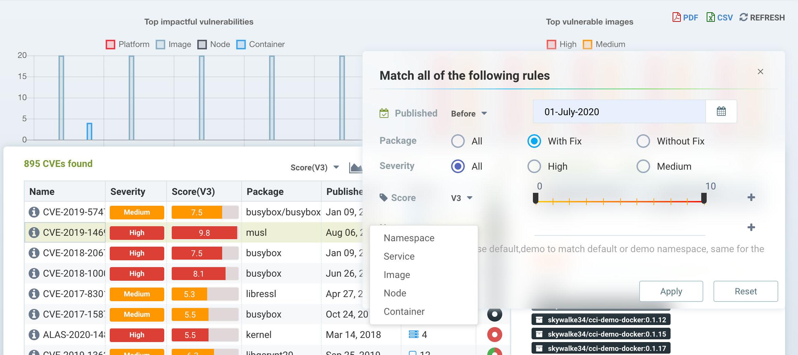
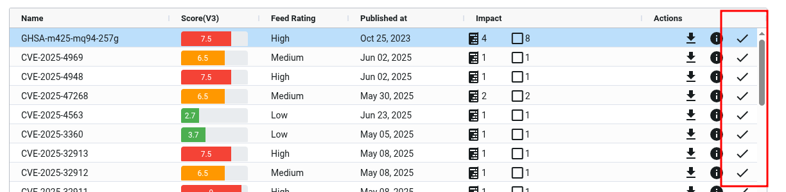
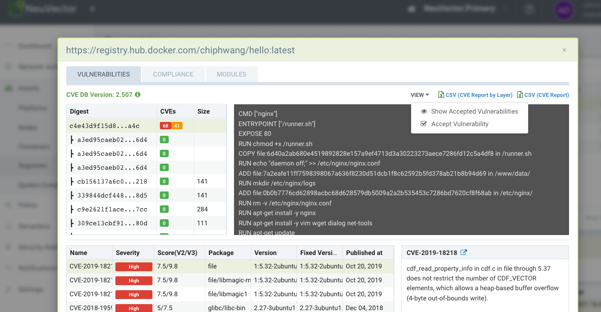
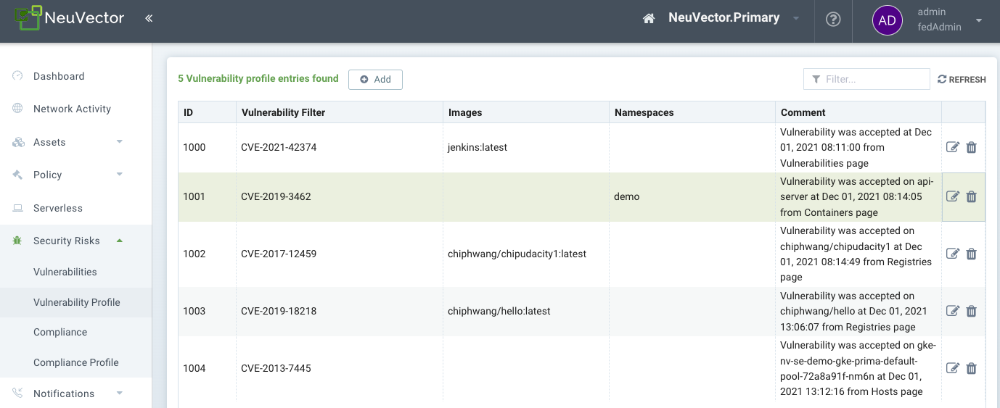

Gestión de vulnerabilidades
Gestión de vulnerabilidades con SUSE® Security
SUSE® Security permite el escaneo y la gestión automatizados de vulnerabilidades a lo largo del pipeline. Las mejores prácticas para gestionar vulnerabilidades en SUSE® Security incluyen:
-
Escanear durante la fase-de-construcción, fallando la construcción si hay vulnerabilidades críticas 'con solución disponible.' Esto obliga a los desarrolladores a abordar las vulnerabilidades solucionables antes de almacenarlas en los registros.
-
Escanear continuamente los registros de staging y producción para buscar vulnerabilidades recién descubiertas. Las vulnerabilidades con soluciones disponibles pueden requerir ser solucionadas de inmediato, o se puede permitir un período de gracia para proporcionar tiempo para remediarlas.
-
Configura las reglas de Control de Admisión para bloquear ampliaciones en producción basados en criterios como crítico/alto, solución disponible y fecha de reporte.
-
Escanear continuamente los nodos/hosts de producción, contenedores y la plataforma de orquestación en busca de vulnerabilidades recién descubiertas. Implementar respuestas basadas en la criticidad/severidad que pueden ser alertas webhook (que contactan a seguridad y desarrollador), poner en cuarentena el contenedor, o iniciar un período de gracia para la remediación.
-
Asegurarse de que los contenedores en ejecución estén en modo Monitor o Proteger con reglas de lista blanca apropiadas para 'parchear virtualmente' las vulnerabilidades y prevenir cualquier explotación en producción.
-
Escanear imágenes basadas en distroless y PhotonOS.
El Panel de Control en SUSE® Security presenta un resumen de la puntuación de riesgo que incluye vulnerabilidades, que puede ser utilizado para reducir el riesgo de las vulnerabilidades. Ver cómo mejorar la puntuación de riesgo para más detalles.
La otra herramienta principal para revisar, filtrar e informar sobre vulnerabilidades está en el menú de Riesgos de Seguridad.
Menú de Riesgos de Seguridad - Vulnerabilidades
Este menú combina los resultados de los escaneos de vulnerabilidades y verificaciones de cumplimiento de registros (imagen), nodo y contenedor encontrados en el menú de Activos para permitir la gestión y reporte de vulnerabilidades de extremo a extremo.
El menú de Vulnerabilidades proporciona una herramienta exploradora potente para:
-
Facilitar la filtración para visualizar o descargar informes, escribiendo una cadena de búsqueda o utilizando el filtro avanzado junto a la caja. El filtro avanzado permite a los usuarios filtrar vulnerabilidades por solución disponible (o no disponible), urgencia, cargas de trabajo, servicio, contenedor, nodos o nombres de espacio de nombres.
-
Entender el impacto de las vulnerabilidades y las comprobaciones de cumplimiento haciendo clic en la fila de impacto y revisando la remediación y las imágenes, nodos o contenedores afectados.
-
Ver el Estado de Protección (riesgo de explotación) de cualquier vulnerabilidad o problema de cumplimiento para ver si hay SUSE® Security protecciones de seguridad en tiempo de ejecución (reglas) habilitadas para nodos o contenedores afectados.
-
'Aceptar' una vulnerabilidad/CVE después de haber sido revisada para ocultarla de las vistas y suprimirla de los informes.

Utiliza la caja de filtro para introducir una coincidencia de cadena, o utiliza el filtro avanzado junto a ella para seleccionar criterios más específicos, como se muestra a continuación. Los informes descargados en PDF y CSV mostrarán solo los resultados filtrados.

Seleccionar cualquier CVE listado proporciona detalles adicionales sobre el CVE, la remediación y qué imágenes, nodos o contenedores están afectados. El icono del Estado de Protección (círculo) muestra varios colores para indicar un porcentaje aproximado de los elementos afectados que están desprotegidos por SUSE® Security durante el tiempo de ejecución, protegidos por SUSE® Security reglas (en modo Monitor o Proteger), o no afectados en tiempo de ejecución (por ejemplo, una imagen escaneada con esta vulnerabilidad no tiene contenedores en ejecución). El esquema de colores de la columna Estado de Protección es:
-
Negro = no afectado
-
Verde = protegido por SUSE® Security con modo Monitor o Proteger
-
Rojo = desprotegido por SUSE® Security, aún en modo Descubrir
El esquema de colores de la ventana de análisis de impacto (mostrando imágenes, nodos, contenedores afectados) es:
-
Negro = no afectado. No hay contenedores utilizando esta imagen en producción
-
Púrpura = ejecutándose en modo Monitor en producción
-
Verde oscuro = ejecutándose en modo Proteger en producción
-
Azul claro = ejecutándose en modo Descubrir en producción (sin protección)
Los colores de Impacto están destinados a corresponder a los colores de protección en tiempo de ejecución para los modos Descubrir, Monitor y Proteger en otros lugares de la consola SUSE® Security.
Aceptando vulnerabilidades
Puedes 'Aceptar' una vulnerabilidad (CVE) para excluirla de informes, vistas, puntuaciones de riesgo, etc. Se puede seleccionar una vulnerabilidad y hacer clic en el botón Aceptar desde varias pantallas como Riesgos de Seguridad → Vulnerabilidades, Activos → Contenedores, etc. Una vez aceptada, se añade a la lista de Perfil de Vulnerabilidad de Riesgos de Seguridad →. Se puede ver, exportar y editar aquí. Ten en cuenta que esta función de Aceptar puede estar limitada a Imágenes y/o Espacios de Nombres listados. También se pueden añadir nuevas entradas manualmente a esta lista desde esta pantalla.
Para Aceptar una vulnerabilidad globalmente, ve a la página de Riesgos de Seguridad → Vulnerabilidades y selecciona la vulnerabilidad, luego Aceptar. Esto creará un Perfil de Vulnerabilidad para este CVE globalmente.

Para Aceptar una vulnerabilidad encontrada en un escaneo de imagen, abre los resultados del escaneo de imagen en Activos → Registros, despliega el menú Ver y selecciona Aceptar. Ten en cuenta que también puedes elegir Mostrar u Ocultar vulnerabilidades aceptadas para esta imagen. NOTA: Esta acción creará una entrada de Perfil de Vulnerabilidad para este CVE en esta IMAGEN solamente.

Para Aceptar una vulnerabilidad encontrada en un contenedor en Activos → Contenedores, selecciona la vulnerabilidad, despliega el menú Ver y selecciona Aceptar. Ten en cuenta que también puedes elegir Mostrar u Ocultar vulnerabilidades aceptadas para este contenedor. NOTA: Esta acción creará un Perfil de Vulnerabilidad para este CVE en este espacio de nombres solamente.

Esta acción también se puede realizar en Activos → Nodos, lo que creará un Perfil de Vulnerabilidad para el CVE para todos los contenedores, imágenes y espacios de nombres.
|
Las vulnerabilidades aceptadas a nivel global están excluidas de la vista en Riesgos de Seguridad → Vulnerabilidades y en los informes exportados desde esta página. Las vulnerabilidades aceptadas que están limitadas a imágenes o espacios de nombres específicos continuarán mostrándose en la vista, pero serán excluidas de los informes donde el Filtro Avanzado limita la vista a esas imágenes o espacios de nombres. |
Gestión de Perfiles de Vulnerabilidad
Cada vulnerabilidad/CVE aceptada crea una entrada en la lista de Perfiles de Vulnerabilidad de Riesgos de Seguridad →. Estas entradas se pueden editar para añadir o eliminar atributos, como los nombres de imagen y de espacio de nombres.

Nuevas vulnerabilidades aceptadas también se pueden añadir aquí introduciendo el nombre del CVE que se va a aceptar.